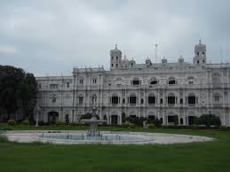
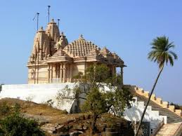
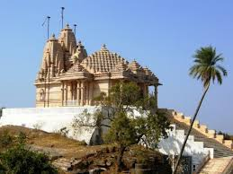

Pachmarhi is a hill station in Madhya Pradesh state of central India. It has been the location of a cantonment (Pachmarhi Cantonment) since British Raj. It is widely known as Satpura ki Rani ("Queen of Satpura"), situated at a height of 1100 m in a valley of the Satpura Range in Hoshangabad district. Dhupgarh, the highest point (1,350 m) in Madhya Pradesh and the Satpura range, is located here. The name Pachmarhi is believed to be derived from the Hindi words Panch ("five") and Marhi ("caves"). According to a legend, these caves were built by five Pandava brothers of Mahabharatha era during their fourteen years of exile. The caves are situated on a hilltop and provide an excellent vantage point. British arrival, Pachmarhi region came under the kingdom of the Gond king Bhawut Singh, although it was a populated village or town at that time. Captain James Forsyth of the British Army along with Subhedar Major Nathoo Ramji Powar who was later made the Kotwal (Incharge of the armoury (Koth)of Pachmarhi, spotted the plateau in the Pachmarhi region in 1857, while leading his troops on the way to Jhansi.[3] It quickly developed into hill station and sanatorium for British troops in the Central Provinces of India. The population in 1901 was 3,020, rising to double that number in the hot summer months. Pachmarhi also served as the summer capital for the Central Provinces. The forest around the town is home to many rare varieties of plants. UNESCO added Pachmarhi park to its list of Biosphere Reserves in May 2009. The total area of Pachmarhi Biosphere Reserve is 4981.72 km2. It is located at longitude 22� 11� to 22� 50�N and latitude 77� 47� to 78� 52�E. It covers parts of three civil districts, viz., Hoshangabad (59.55%),Chhindwara (29.19%) and Betul (11.26%). It includes three wildlife conservation units viz., Bori Sanctuary 485.72 km2), Satpura National Park (524.37 km2) and Pachmarhi Sanctuary (491.63 km2). These altogether has also been notified as Satpura Tiger Reserve (1501.72 km2) African Journal of Environmental Science and Technology Vol. 5(9), pp. 717�721, September 2011
Bhopal is the capital of the Indian state of Madhya Pradesh and the administrative headquarters of Bhopal district and Bhopal division. The city was the capital of the former Bhopal State. Bhopal is known as the City of Lakes for its various natural as well as artificial lakes and is also one of the greenest cities in India.[4] It is the 17th largest city in the country and 131st in the world. It is located 190 km east of the financial capital and the largest city of the state, Indore. According to folklore, Bhopal is said to have been founded by the king Bhoja of the Paramara dynasty (AD 1000�1055), who ruled from his capital at Dhar. This theory states that Bhopal was originally known as Bhojpal after a dam ("pal") constructed by the king's minister. No available archaeological evidence, inscriptions or historical texts support the claim about an earlier settlement founded by Bhoja at the same place, although a temple complex constructed by him exists at Bhojpur, which is located 28 km from Bhopal. An alternative theory says that the name of the city was coined from the name of another king called Bhupala (or Bhupal).[9][10][11] In the early 18th century, Bhopal was a small village in the local Gond kingdom. The modern Bhopal city was established by Dost Mohammad Khan (1672�1728), an Afghan soldier in the Mughal army. After the death of the emperor Aurangzeb, Khan started providing mercenary services to several local chieftains in the politically unstable Malwa region. In 1709, he took on the lease of Berasia estate, and later annexed several territories in the region to establish the Bhopal State. Khan received the territory of Bhopal from the Gond queen Kamlapati in lieu of payment for mercenary services, and usurped her kingdom after her death. In the 1720s, he built the Fatehgarh fort in the village, which developed into the city of Bhopal over the next few decades. In 1818, Bhopal became a British princely state. Between 1819 and 1926, it was ruled by four women, Begums, � unique in the royalty of those days - under British suzerainty, Qudsia Begum was the first woman ruler, who was succeeded by her only daughter Sikandar Begum, who in turn was succeeded by her only daughter, Shahjehan Begum. Sultan Jahan Begum was the last woman ruler, who after 25 years of rule, abdicated in favour of her son, Hamidullah Khan. The rule of Begums gave the city its waterworks, railways, a postal system and a municipality constituted in 1907.
Indore is a tier 2 city, the largest city of the Indian state of Madhya Pradesh by population. It serves as the headquarters of both Indore District and Indore Division. A central power city, Indore exerts a significant impact upon commerce, finance, media, art, fashion, research, technology, education, and entertainment and has been described as the commercial capital of the state. Indore is the only city in India to house both the Indian Institute of Technology and Indian Institute of Management. Located on the southern edge of Malwa Plateau, the city is located 190 km west of the state capital of Bhopal. With a Census-estimated 2011 population of 3,276,697 distributed over a land area of just 3,898 square kilometer, Indore is the most densely populated major city in the central province. The Indore Metropolitan Area's population is the state's largest, with 3.2 million people living there. Indore traces its roots to its 16th century founding as a trading hub between the Deccan and Delhi. The city and its surroundings came under Maratha Empire on 18 May 1724 after Maratha Peshwa Baji Rao I assumed the full control of Malwa. During the days of the British Raj, Indore State was a 19 Gun Salute (21 locally) princely state (a rare high rank) ruled by the Maratha Holkar dynasty, until they acceded to the Union of India. Indore served as the capital of the Madhya Bharat from 1950 until 1956. Indore's financial district, anchored by central Indore, functions as the financial capital of the Madhya Pradesh and is home to the Madhya Pradesh Stock Exchange, India's third oldest stock exchange. Indore's real estate market is among the most expensive in Central India.

Gwalior is a historic and major city in the Indian state of Madhya Pradesh and one of the Counter-magnet cities. Located 319 kilometres (198 mi) south of Delhi the capital city of India, Gwalior occupies a strategic location in the Gird region of India. The city and its fortress have been ruled by several historic northern Indian kingdoms. From the Tomars in the 13th century, it was passed on to the Mughals, then to the Marathas in 1754 followed by the Scindias in 18th century. Besides being the administrative headquarters of Gwalior district and Gwalior division, Gwalior has many administrative offices of Chambal Division of northern Madhya Pradesh. Several administrative and judicial organizations, commissions and boards have their state, as well as national, headquarters situated in the city. Gwalior was the winter capital of the state of Madhya Bharat which later became a part of the larger state of Madhya Pradesh. Before Indian Independence on 15 August 1947, Gwalior remained a princely state of the British Raj with Scindias as the local ruler. High rocky hills surround the city from all sides, on the north it just forms the border of the Ganga- Yamuna Drainage Basin. The city however is situated in the valley between the hills. Gwalior's metropolitan area includes Lashkar Gwalior (Lashkar Subcity), Morar Gwalior (Morar Subcity), Thatipur and the city center. Gwalior has made a rich contribution to the history of India. From the Vedic ages to the Indian Rebellion of 1857 and the British Raj, it has emerged as a prominent place making it an important archaeological as well as a historic site. The rich heritage of art and culture, and especially the contribution of Gwalior to classical music is worth mentioning. Post-independence, Gwalior has emerged as an important tourist attraction in central India while many industries and administrative offices came up within the city. Before the end of the 20th century it became a million plus agglomeration and now it is a metropolitan city in central India. Gwalior is surrounded by industrial and commercial zones of neighbouring districts (Malanpur � Bhind, Banmor � Morena) on all three main directions. A 2014 report of the World Health Organization found Gwalior to be the third-most air-polluted city in the world.
Jabalpur is a city in the state of Madhya Pradesh, India. According to the 2011 census, it is the third-largest urban agglomeration in Madhya Pradesh and the country's 26th-largest urban agglomeration. Jabalpur is the administrative headquarters of Jabalpur district (the second-most-populous district in Madhya Pradesh) and the Jabalpur division. Historically, a center of the Kalchuri and Gond dynasties, the city developed a syncretic culture influenced by intermittent Mughal and Maratha rule. During the early nineteenth century, it was annexed by British India as Jubbulpore and incorporated as a cantonment town. Since Indian independence there have been demands for a separate state of Mahakoshal, with Jabalpur its capital. The High Court of Madhya Pradesh is located here. Mythology describes three asura (evil spirits) in the Jabalpur region who were defeated by Shiva.[4] In Rupnath, 84 kilometres (52 mi) north of the city, Ashokan relics dating to 300 BCE have been found as evidence of the Maurya Empire (322 to 185 BCE).[4] When the empire fell, Jabalpur became a city-state before it was ruled by the Satavahana dynasty (230 BCE to 220 CE). Local rulers, including the Bodhis and the Senas, followed before the region became a vassal state of the Gupta Empire (320 to 550). From 675 to 800, the region was ruled by Bamraj Dev of the Kalachuri dynasty from Karanbel. The best known Kalachuri ruler was Yuvraj Dev I (reigned 915 to 945), who married Nohla Devi (a princess of the Chalukya dynasty). One of the Kalachuri amatya (ministers) was Golok Simha Kayastha, who was instrumental in founding the Chausath Yogini Temple near Bhedaghat. His descendants include Bhoj Simha, adviser to Sangramsahi (reigned 1491�1543); Adhar Simha, adviser to Rani Durgavati (reigned 1550�1564) and Beohar Raghuvir Sinha, jagirdar of Jabalpur until 1947.
 

Bhojpur is situated on the Betwa River, 28 km from Bhopal, the state capital of Madhya Pradesh. The site is located on sandstone ridges typical of central India, next to a deep gorge through which the Betwa River flows. Two large dams, constructed of massive hammer-dressed stones, were built in the eleventh century to divert and block the Betwa, so creating a large lake. Bhojpur takes its name from king Bhoja (reg. c. 1000�1055 CE), the most celebrated ruler of the Paramara dynasty.[1] There is no archaeological evidence from Bhojpur before the eleventh century, a fact confirmed by local legends which recount how Bhoja made a vow to build a series of dams �to arrest the streams of nine rivers and ninety-nine rivulets�. A location was found in the kingdom that allowed the king to fulfil this vow and the dams were duly built at Bhojpur.[2] Although the dams were constructed of cyclopean masonry, one of them was opened on the orders of Hoshang Shah of Malwa in the fifteenth century. According to Persian chronicles, he ordered the dam to be broken at the request of local merchants in Bhopal and Vidisha whose caravans were being raided by bandits taking refuge at an inaccessible spot protected by the lake.
During the early 20th century, Betul was known as Badnur. It derives its present name from its surrounding district, which was named for its former headquarters at Betul Bazar, a small town about 5 km (3 mi) to its south. Betul�literally "without" (be) "cotton" (tool)�was named for its position outside the area's cottonfields. Nearby Kherla was formerly the seat of an independent kingdom in the medieval and early modern period. Under Company Rule, its fort was permitted to fall into ruin. Badnur became the headquarters of Betul District in 1822. Surrounded by hills on all sides, it was used by the British for the exportation of coal.[citation needed] It supported two bazaars; the larger, Kothi Bazar, held 2015 people in the 1870s. At that time, the town had a circuit house, a dak bungalow, a caravanserai, jail, police station, pharmacy, and schools. Its population c.?1901 was 3766. Following independence, Betul lay near the geographical center point of the new country, which is now marked by a stone at Barsali. Betul was connected to the Delhi�Chennai line of the Indian rail network in the early 1950s. It now serves as a junction point, providing the only access to the Chindwara District on broad-gauge rail. Betul is located at 21.92�N 77.9�E, near the geographical center point of modern India. It has an average elevation of 658 m (2,159 ft).